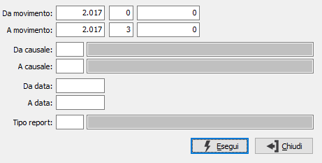

Stampa brogliaccio
Il programma attiva la stampa del brogliaccio (distinta di vendita), sulla base dei parametri di selezione inseriti dall’utente.

DA MOVIMENTO: i tre campi contengono rispettivamente anno, serie e numero del movimento da cui si vuole iniziare la selezione. Confermando a vuoto, la selezione inizia dal primo movimento compatibile con i successivi parametri.
A MOVIMENTO: i tre campi contengono rispettivamente anno, serie e numero del movimento con cui si vuole concludere la selezione. Confermando a vuoto, la selezione termina con l’ultimo movimento compatibile con i successivi parametri.
DA CAUSALE: codice della causale del movimento da cui si vuole iniziare la selezione. Confermando a vuoto, la selezione inizia dalla prima causale valida. Sul campo sono attive le funzioni di ricerca (F9).
A CAUSALE: codice della causale del movimento con cui si vuole terminare la selezione. Confermando a vuoto, la selezione termina all’ultima causale valida. Sul campo sono attive le funzioni di ricerca (F9).
DA DATA: data movimento da cui si vuole iniziare la selezione. Confermando a vuoto, la selezione inizia dalla prima data valida.
A DATA: data movimento con cui si vuole concludere la selezione. Confermando a vuoto, la selezione inizia dalla prima data valida.
TIPO REPORT: consente di specificare un tipo di report specifico per stampare solo i movimenti che hanno sulla causale il tipo report inserito. Sul campo sono attive le funzioni di ricerca (F9).